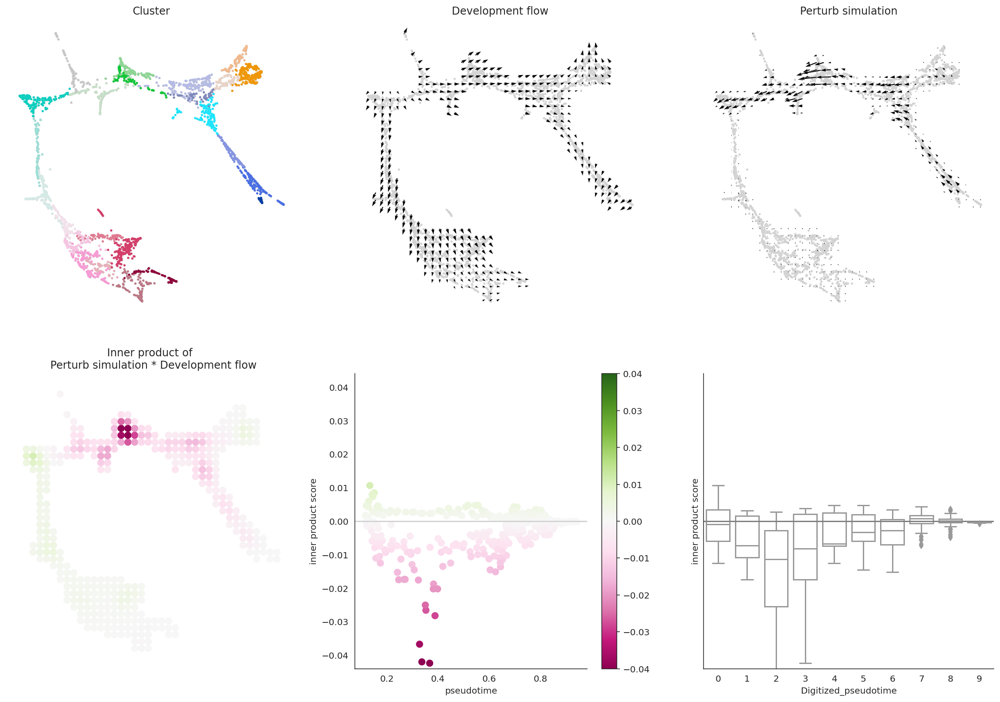
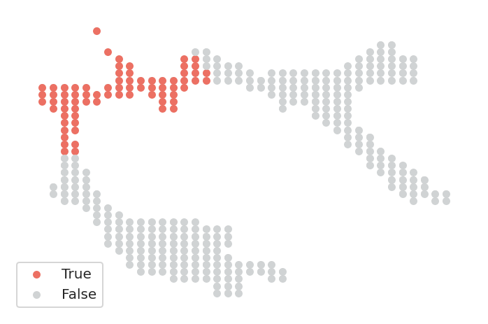
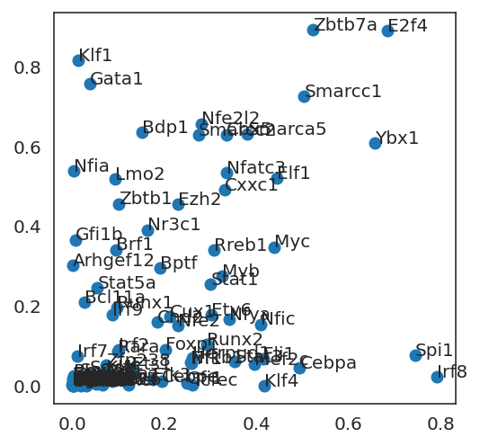

0. Import libraries¶
0.1. Import public libraries¶
[1]:
import copy
import glob
import importlib
import time
import os
import shutil
import sys
from importlib import reload
import matplotlib.colors as colors
import matplotlib.pyplot as plt
import numpy as np
import pandas as pd
import scanpy as sc
import seaborn as sns
from tqdm.notebook import tqdm
#import time
0.2. Import our library¶
[3]:
import celloracle as co
from celloracle.applications import Oracle_development_module, Oracle_systematic_analysis_helper
co.__version__
[3]:
'0.12.0'
0.3. Plotting parameter setting¶
[3]:
#plt.rcParams["font.family"] = "arial"
plt.rcParams["figure.figsize"] = [5,5]
%config InlineBackend.figure_format = 'retina'
plt.rcParams["savefig.dpi"] = 300
plt.rcParams['pdf.fonttype']=42
%matplotlib inline
1. Load systematic simulation results¶
[4]:
# Make Oracle development module class to load data
file_path = "./Systematic_simulation_results_Paul_data.celloracle.hdf5"
dev = Oracle_development_module()
dev.set_hdf_path(path=file_path)
[5]:
# If we use the function below, we can see information of the saved data
info = dev.get_hdf5_info()
print("Genes\n", info["gene_list"])
print("\nSimulation conditions\n", info["misc_list"])
Genes
['Arhgef12' 'Arid5a' 'Batf3' 'Bcl11a' 'Bdp1' 'Bhlha15' 'Bptf' 'Brf1'
'Cbx5' 'Cebpa' 'Cebpe' 'Chd2' 'Cux1' 'Cxxc1' 'E2f4' 'Egr1' 'Elf1' 'Elk3'
'Ets1' 'Etv6' 'Ezh2' 'Fli1' 'Foxo1' 'Foxp1' 'Gata1' 'Gata2' 'Gfi1'
'Gfi1b' 'Herpud1' 'Hivep2' 'Hlf' 'Hnf4a' 'Hoxa5' 'Hoxa7' 'Id2' 'Ikzf2'
'Irf1' 'Irf2' 'Irf7' 'Irf8' 'Irf9' 'Itgb2' 'Klf1' 'Klf2' 'Klf4' 'Klf6'
'Lmo2' 'Mef2c' 'Meis1' 'Myb' 'Myc' 'Mycn' 'Nfat5' 'Nfatc2' 'Nfatc3'
'Nfe2' 'Nfe2l2' 'Nfia' 'Nfic' 'Nfkb1' 'Nfya' 'Nr3c1' 'Pbx1' 'Phf21a'
'Prdm5' 'Rara' 'Rel' 'Rreb1' 'Runx1' 'Runx2' 'Smarca5' 'Smarcc1'
'Smarcc2' 'Sox13' 'Sox4' 'Sp100' 'Spi1' 'Stat1' 'Stat3' 'Stat4' 'Stat5a'
'Tcf7' 'Tcfec' 'Ybx1' 'Zbtb1' 'Zbtb16' 'Zbtb4' 'Zbtb7a' 'Zfhx3' 'Zfp238']
Simulation conditions
['Granulocytes' 'Lineage_GM' 'Lineage_ME' 'Monocytes' 'Whole_cells']
1.1 Let’s check one simulation result¶
[6]:
# Load one results
dev.load_hdf5(gene="Spi1", misc="Whole_cells")
# Visualize result
dev.visualize_development_module_layout_0(s=5, scale_for_simulation=0.5, s_grid=50,
scale_for_pseudotime=50, vm=0.04)

2. Systematic analysis using Interactive UI¶
Next, we will analyze systematic KO results. Here we can use Oracle_systematic_analysis_helper class. Please install jupyter widgets if you got an error. https://ipywidgets.readthedocs.io/en/stable/
[7]:
# Load data with Oracle_systematic_analysis_helper.
helper = Oracle_systematic_analysis_helper(hdf5_file_path=file_path)
2.1. Sorting TFs based on negative score.¶
You can get list of negative PS score. In some case, you may want to focus on specific developmental time. Pleasae select pseudotime using the widget below.
[8]:
helper.interactive_sort_TFs_by_neagative_ip()
In the default setting, the developmental trajectory has been divided into 10 bins. If you are not sure about the selected pseudotime, you can visualize them using plot_selected_pseudotime_on_grid function as follows.
[9]:
dev.plot_selected_pseudotime_on_grid(pseudotime_selected=[0, 1, 2])

You can also get gene list as a dataframe as follows.¶
[10]:
ps = helper.calculate_negative_ps_p_value(misc="Whole_cells")
[11]:
ps
[11]:
| gene | ps_sum | |
|---|---|---|
| 0 | E2f4 | 2.413362 |
| 1 | Zbtb7a | 2.122534 |
| 2 | Ybx1 | 1.773209 |
| 3 | Smarcc1 | 1.721975 |
| 4 | Smarca5 | 1.345598 |
| ... | ... | ... |
| 85 | Tcf7 | 0.003968 |
| 86 | Sox13 | 0.003499 |
| 87 | Batf3 | 0.003168 |
| 88 | Stat4 | 0.002576 |
| 89 | Meis1 | 0.002344 |
90 rows × 2 columns
[12]:
## Make plot like fig1 f
ps_me = helper.calculate_negative_ps_p_value(misc="Lineage_ME")
ps_gm = helper.calculate_negative_ps_p_value(misc="Lineage_GM")
ps_me.ps_sum = np.log1p(ps_me.ps_sum) # Log transform
ps_gm.ps_sum = np.log1p(ps_gm.ps_sum) # Log transform
ps_me = ps_me.rename(columns={"ps_sum": "ps_sum_me"})
ps_gm = ps_gm.rename(columns={"ps_sum": "ps_sum_gm"})
ps_merged = pd.merge(ps_me, ps_gm, on="gene")
[13]:
fig, ax = plt.subplots(figsize=[4, 4])
ax.scatter(ps_merged.ps_sum_gm, ps_merged.ps_sum_me)
for idx, (gene, y, x) in ps_merged.iterrows():
ax.text(s=gene, x=x, y=y)

[ ]: